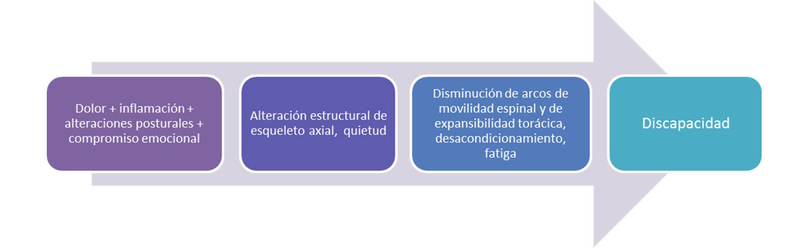
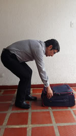
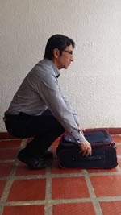
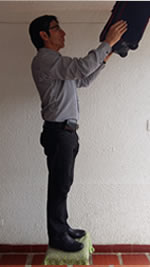
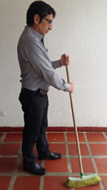

<div class="pages">
	<div data-page="projects" class="page no-toolbar no-navbar">
		<div class="page-content">
			<div class="navbarpages">
				<div class="nav_left_logo"><a href="index.html"></a></div>
				<div class="nav_right_button"><a href="menu.html"></a><a href="#" class="back" data-force="true"></a></div>
			</div>
			<div id="pages_maincontent">
				<h2 class="page_title">Rehabilitación en el paciente con espondiloartritis</h2>
				<div class="page_content">
					<h3>¿Por qué los pacientes con espondiloartritis requieren manejo por rehabilitación?</h3>
					<a rel="gallery-1" href="images/photos/rehabilitacion.jpg" title="Manejo por rehabilitación" class="swipebox"></a>
					<h3>¿Cuáles son los objetivos generales del tratamiento por el grupo de rehabilitación?</h3>
					<h4>Objetivos</h4>
					<ul>
						<li>Control del dolor</li>
						<li>Mantener funcionalidad e independencia en autocuidado y actividades de la vida diaria</li>
						<li>Prevención de complicaciones como desacondicionamiento, osteoporosis.</li>
						<li>Mantenimiento de arcos de movilidad espinal, expansibilidad torácica y función pulmonar</li>
					</ul>
					<h3>¿Cuáles son los intervenciones específicas que se realizan en Rehabilitación?</h3>
					<ul>
						<li>El paciente debe ser manejado  por un grupo interdisciplinario compuesto por fisiatra, terapeuta física,  terapeuta ocupacional, psicólogo y nutricionista. </li>
						<li>Se debe establecer un plan de  manejo enfocado a:</li>
					</ul>
					<h4>Educación:</h4>
					<p>Educación sobre su enfermedad, metas del tratamiento rehabilitador, hábitos nutricionales, papel de la familia en el manejo de la enfermedad.<br>
						Se busca lograr mayor adherencia al tratamiento, disminuir ansiedad y/o depresión, mantener estilos de vida saludables, disminución de peso.</p>
					<h4>Ejercicio:</h4>
					<p>Actualmente existe evidencia insuficiente para determinar el efecto local o sistémico del ejercicio en pacientes con espondilitis anquilosante, como único tratamiento. Sin embargo, algunas revisiones sistemáticas han mostrado un efecto benéfico con la combinación de Anti TNF + un programa de ejercicio específico e individualizado, con respecto a pacientes que reciben solamente anti TNF<br>
						<strong>Metas del plan de ejercicio:</strong> lograr un efecto endorfínico;  mejorar o mantener: rangos de movilidad axial y periférica, fortalecimiento muscular, capacidad aeróbica, propiocepción;  lograr efecto positivo sobre microarquitectura ósea.<br>
						Para la formulación de cualquier tipo de ejercicio tener en cuenta: tipo de ejercicio, intensidad, duración y frecuencia. Fase de la enfermedad<br>
						Adicional al ejercicio se emplean diferentes métodos terapéuticos para manejo analgésico y mantenimiento de tejidos blandos periarticulares</p>
					<h4>Adaptaciones:</h4>
					<p>Formulación de adaptaciones para promover su independencia (ejemplos: elevadores de baño, sillas altas, calzadores de mango largo etc.)<br>
						Recomendaciones para modificaciones de puestos de trabajo, con el fin de mantener posiciones ergonómicas, evitando sobreuso, dolor y deformidad.</p>
					<h4>Higiene postural:</h4>
					<p>Entrenamiento en adecuada higiene postural en actividades de la vida diaria, para reducir el estrés articular, evitar posiciones que favorezcan deformidad, evitar posturas prolongadas y soporte de peso excesivo</p>
					<h3>¿Cuáles ejercicios se deben incluir en el plan individualizado para pacientes con espondiloartritis?:</h3>
					<p>Ejercicios para mantener arcos de movilidad espinal (Recomendación grado A)</p>
					<p>Estiramientos y fortalecimiento de grupos musculares específicos, con el fin de  proveer estabilidad postural y distribuir las fuerzas de impacto y estrés en las articulaciones (Recomendación grado B)</p>
					<p>Ejercicios para mantener arcos de movilidad en articulaciones periféricas (Recomendación grado A)</p>
					<p>Ejercicio aeróbico de bajo impacto (Recomendación grado B)</p>
					<p>Ejercicios para mejorar función respiratoria y expansibilidad torácica (Recomendación grado B)</p>
					<p>Ejercicio en agua: los beneficios del ejercicio en agua están dados por la eliminación de la gravedad, la menor compresión articular y el efecto relajante muscular</p>
					<h3>¿Qué complicaciones se pueden presentar con la realización de ejercicio en estos pacientes?</h3>
					<p>Algunas complicaciones muy poco frecuentes, pero que pueden estar relacionadas con un ejercicio inadecuado son: discitis – pseudoartrosis (mayor prevalencia en niveles T11/T12), fracturas vertebrales (en una columna alterada biomecánicamente), luxaciones de prótesis de caderas, subluxación atlantoaxial</p>
					<h3>¿Cuáles son las principales recomendaciones de higiene postural para ser tenidas en cuenta en el momento de la consulta? </h3>
					
					<ul class="responsive_table">
						<li class="table_row">
							<div class="table_section_45">Incorrecto</div>
							<div class="table_section_45">Correcto</div>
						</li>
						<li class="table_row">
							<div class="table_section_45"></div>
							<div class="table_section_45"></div>
						</li>
						<li class="table_row">
							<div class="table_section_45"></div>
							<div class="table_section_45"></div>
						</li>
						<li class="table_row">
							<div class="table_section_45"></div>
							<div class="table_section_45"></div>
						</li>
						<li class="table_row">
							<div class="table_section_45"></div>
							<div class="table_section_45"></div>
						</li>
						<li class="table_row">
							<div class="table_section_45"></div>
							<div class="table_section_45"></div>
						</li>
						<li class="table_row">
							<div class="table_section_45"></div>
							<div class="table_section_45"></div>
						</li>
						<li class="table_row">
							<div class="table_section_45"></div>
							<div class="table_section_45"></div>
						</li>
					</ul>
					
					<a href="menu.html" class="button_full">Menu principal</a>
				</div>
			</div>
		</div>
	</div>
</div>
